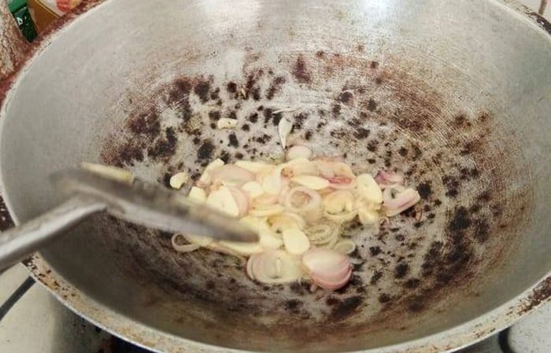

Bahan Yang Diperlukan


Ayam yang telah dibersihkan

Daun salam 4 lembar

Sereh, 3 batang

Asem jawa secukupnya

Santan 1 gelas

Minyak secukupnya
Cara Masak


Panaskan minyak, tumis bumbu halus, daun salam, dan serai hingga harum.
Masukkan air larutan asam Jawa dan ayam, aduk rata.
Tuangkan santan, aduk perlahan agar santan tidak pecah.
Panaskan wajan, panggang ayam sambil diolesi bumbu halus dan kecap. Panggang hingga berwarna kecokelatan.
Angkat dan sajikan.